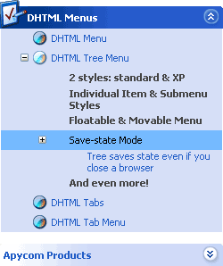

| Introduction | |
| Application Interface | |
| Menu Types |
| DHTML Menus Website | |
| Apycom Software Website | |
| XP Web-Buttons Website | |
|
Apycom DHTML Tuner 2.0 |
|
|
Manual |
|
| Introduction | |
|
Dear customers, Apycom Software is glad to present a new version of the DHTML Tuner v2.0! DHTML Tuner is a powerful software that gives you the full control over all types of Apycom DHTML Menus. It doesn't matter what concrete type of menu you prefer: either DHTML Menu or Tree Menu, either DHTML Tabs or Tab Menu - our new DHTML Tuner gives the best fit to each of them. This software really saves your time and efforts as creating or editing a menu is no longer a problem! You only choose the necessary data for your menu and the Tuner generates the preview of it in no time. The DHTML Tuner has such a nice user-friendly interface that you are sure to like it ;) So, experiment, create and have fun with the DHTML Tuner! |
| Application Interface | ||||||
|
The DHTML Tuner has a user-friendly interface. The principal interface part of the second version of the Tuner is based on a HTML technology. For example, the main window toolbar and the list of parameters are HTML pages (see the picture below). The appearance of these pages can be modified by an advanced user. For more details about interface modifications, please, write to our Support.  1. Toolbar The toolbar gives a quick access to main menu commands. Toolbar buttons: - New Project (Ctrl+N) - create a new menu project; - Open Project (Ctrl+O) - open an existing menu project (.js file); - Save Project (Ctrl+S) - save the current menu project; - Save project As... (Ctrl+Shift+S) - save the current menu project with a new file name; - Change Menu Type (Ctrl+M) - change a type of a menu (project). See more about menu types in Menu Types section; - Help (F1) - view this manual. 2. Menu Parameters This section allows you to tune menu parameters. Each parameter has a type. Here are some of them:
To see a parameter info move a mouse cursor over the parameter name or click on button. Some parameters are modified by entering values into a parameter value field (for example, integer parameter type). Others can be changed using special dialogs (for example, font style or image) or entering values manually. You should modify parameters carefully if you change them yourself. For example, an integer parameter can only accept signed numerical values and can't accept text and special characters. If you get an error in a preview window after the parameter modification - check the changed value. You can copy, cut and paste parameters values. In other words, you can do the same actions as with standard HTML forms. 3. Menu Items These controls allow you to create, delete and modify menu items. The bottom items panel contains the following buttons: - Add Item - add a new item; - Add Subitem - add a new subitem to a selected item; - Delete Selected - delete selected items. To select a group of items you can use Shift and Ctrl keys. - Delete All - delete all the items of a menu. - Edit Individual Styles... - create the individual styles dialog. Using this dialog you can create individual styles for menu items (and submenu styles for some types of menu). 
You can rename, move and copy menu items. To rename the item click on it and hold a mouse cursor for a second. To move items select items you want and use a mouse drag'n'drop method. To copy items select items you want and use a mouse drag'n'drop method holding a Ctrl key. Also you can use items context menu: a right mouse click on the list of items. 4. Item Parameters Window Different menu types have different item parameters (see Menu Types). To see an item parameter info move a mouse cursor over the parameter name or click on button. You can operate on item parameters in the same way as on menu parameters (see above). You can change parameters for several menu items at once: select items you want (using Ctrl/Shift keys) and modify necessary parameters. All changes will be applied for all selected items. 5. Preview Window 
This window displays your menu. If "Auto Update" is checked, the preview will be updated automatically after change of any of parameters. The "Update" button updates the preview instantly. If you build a menu with a large quantity of items, it's recommended to turn the "Auto Update" off. 6. Individual Styles Window This window allows you to create individual styles for menu items. For some menu types (the DHTML Menu, the DHTML Tree Menu) it allows you to create individual submenu styles. a) These buttons switch from the item styles dialog to the submenu styles dialog. In the item styles dialog you create individual styles for items and in the submenu styles dialog - for submenus. Some menus support both style types, others don't. b) Style parameters. You can operate on style parameters in the same way as on menu parameters (see above). c) Styles list. This list displays created styles. You can rename styles using "Style name" field. To make a style duplicate click "Duplicate Style" button. When you create a new style you should define at least 1 parameter for this style. In other case you'll get an error. |
| Menu Types | |
|
The DHTML Tuner2 supports 4 menu types: 1. the DHTML Menu; 2. the DHTML Tree Menu; 3. the DHTML Tabs; 4. the DHTML Tab Menu. Each menu type has its own parameters. But ideology is equal: all the menus have items, parameters and individual styles. Using the Tuner you can easily configure each menu parameter. You can modify menu data manually as well. These data are saved into a .js file, so you can open a file in a text editor and change it. To change a menu type (project type) in the Tuner click on the "Change menu type" button on the toolbar (see Application Interface) or choose (File/Select Menu Type...) If you create a new project, it's recommended that you save it before you'll make changes. Doing that, you set a default directory for all images and URLs paths. So, if you select, for example, the image and this image is in a subdirectory of the directory where your project is saved, the image path will be a relative one. In other case the path will be absolute. When you open a project, make sure that you have selected a correct menu (project) type in the Tuner. If you open a project which doesn't have the same type - the menu won't be loaded correctly. 1. The DHTML Menu This is a pulldown menu. You can create menu items with different levels of nesting. Each new item level creates a submenu. The item of this menu has the following parameters: Text - an item text. If this value is '-' (minus), the item is separator. You can also write any HTML code for this value. For example, a table or an image. Link - a URL to open on an item click event. Besides, you can write a JavaScript code instead of a URL: javascript:your_code Target - an individual item target. You can set one of standard values or set your own target (for example, a frame name). Tip - a hint message. Normal icon - item icon in a normal item state. Mouse over icon - item icon in a mouseover item state. Item style - individual item style. Submenu style - individual submenu style. This style is used for a submenu and has an effect when the item is the first one in a submenu. Use the "Individual Styles" dialog to create and modify individual styles. When you assign the individual style to the item and you get en error - check parameters for this style. At least 1 style parameter mustn't be empty. 2. The DHTML Tree Menu  You can create menu items with different levels of nesting. A structure of the menu looks as the items tree in the Tuner. This menu has 2 style modes: 1. standard mode - looks like a standard tree menu; 2. XP-Style mode - looks like a menu in Windows XP. To enable this mode set tXPStyle parameter to 1 (true). The item of this menu has the following parameters: Text - an item text. You can also write any HTML code for this value. For example, a table or an image. Link - URL to open on an item click event. Besides, you can write a JavaScript code instead of a URL: javascript:your_code Target - a target. You can set one of standard values or set your own target (for example, a frame name). Tip - a hint message. Normal icon (expanded) - item icon in a normal item state when item is expanded. Normal icon (collapsed) - item icon in a normal item state when item is collapsed. Mouse over icon - item icon in a mouseover item state. Shows only if item is collapsed Item style - individual item style. Submenu style - individual submenu style. This style is used for submenus in the XP-Style mode only and has an effect when the item is a top-level one. Use the "Individual Styles" dialog to create and modify individual styles. When you assign the individual style to the item and you get en error - check parameters for this style. At least 1 style parameter mustn't be empty. 3. The DHTML Tabs You can create one-level items only. The item of this menu has the following parameters: Text - an item text. If this value is '-' (minus), the item is separator. You can also write any HTML code for this value. For example, a table or an image. Object ID - id attribute of an object which will be shown by item clicking. Besides, you can write a JavaScript code instead of a object id: javascript:your_code Tip - a hint message. Normal icon - item icon in a normal item state. Mouse over icon - item icon in a mouseover item state. Selected icon - item icon in a selected item state. Item style - individual item style. Use the "Individual Styles" dialog to create and modify individual styles. When you assign the individual style to the item and you get en error - check parameters for this style. At least 1 style parameter mustn't be empty. 4. The DHTML Tab Menu You can create 2-level items only. This menu looks like the DHTML Tabs, but it also has submenus. The item of this menu has the following parameters: Text - an item text. If this value is '-' (minus), the item is separator. You can also write any HTML code for this value. For example, a table or an image. Link - URL to open on an item click event. Besides, you can write a JavaScript code instead of a URL: javascript:your_code Target - a target. You can set one of standard values or set your own target (for example, a frame name). Tip - a hint message. Normal icon - item icon in a normal item state. Mouse over icon - item icon in a mouseover item state. Selected icon - item icon in a selected item state. Item style - individual item style. Submenu style - individual submenu style. This style is used for a submenu and has an effect when the item is a top-level one. Use the "Individual Styles" dialog to create and modify individual styles. When you assign the individual style to the item and you get en error - check parameters for this style. At least 1 style parameter mustn't be empty. |